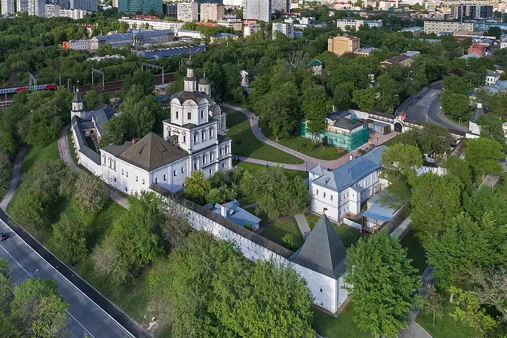

Фото: A.Savin, Free Art License · Wikimedia Commons
Музей и монастырь · ЦАО
Андроников монастырь
Белокаменный Спасский собор и Музей Андрея Рублёва с древнерусскими иконами.
- ₽ · до 1 500 ₽ на человека
- в 1 плане
Позвать сюда: Андроников монастырьОткрыть в каталоге: Андроников монастырьМаршрут до места: Андроников монастырь
Адрес и детали
- Адрес
- Андроньевская пл., 10
Открыть на Яндекс Картах (в новой вкладке) - Метро
- м. Площадь Ильича
- Округ
- Центр (ЦАО)
- Цена
- до 1 500 ₽ на человека
- Часы работы
- пн, вт 11:00–19:00; чт 13:00–21:00; пт 11:00–19:00; сб 11:00–21:00; вс 11:00–18:00 · проверили в октябре 2026
- Телефон
- +7 (495) 911-45-02
- Проверено
- работает — проверили в октябре 2026
Планы с этим местом 1
- Андроников монастырь · Музей и монастырь · м. Площадь Ильича
- 6 минут пешкомСекрет · Приватный кинотеатр
Прогулка вокруг белых стен Андроникова монастыря, а потом приватный кинотеатр «Секрет»: свой зал с большим диваном, любой фильм и работа до шести утра.
Открыть план: Монастырь и кинозал только для васПозвать сюда: Монастырь и кинозал только для вас
Фото: A.Savin, Free Art License · Wikimedia Commons

Похожие рядом

Что ещё рядом
Как позвать
- Выбери план, место или событие — в карточке адрес, цены и маршрут в Яндекс Картах.
- Нажми «Позвать сюда» — соберётся приглашение-игра для свидания или голосование для компании.
- Отправь ссылку в любой мессенджер: тебе ответят, а компания отметит, куда и когда может. Бесплатно и без регистрации.